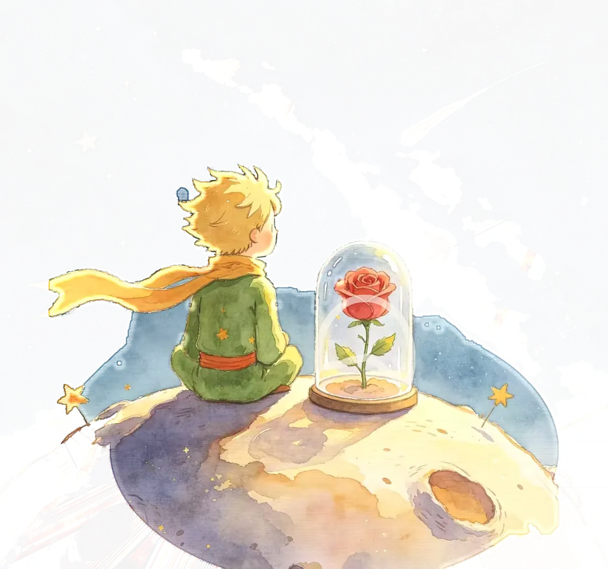
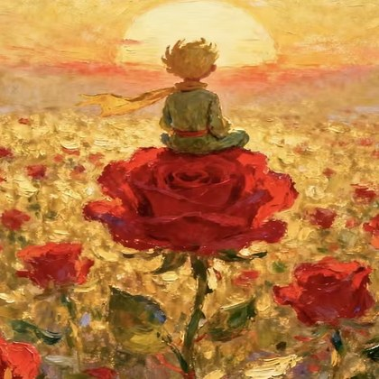

B-612 · PLANET
Welcome to my world !
02我的爱好
03我的生活碎片
能力
Merchant · Planet
01我的数智编程能力星图

02《数智编程》课前 / 课后能力自评
上课前
上课后
评分刻度 · 期末自评：1 = 完全不会，5 = 能独立做完并讲清楚
经历与成绩
Lamplighter · Planet
01学业
02核心课程
03成长故事
04实践与荣誉
05校园与社会实践
作品星球
Letters · From · Planets